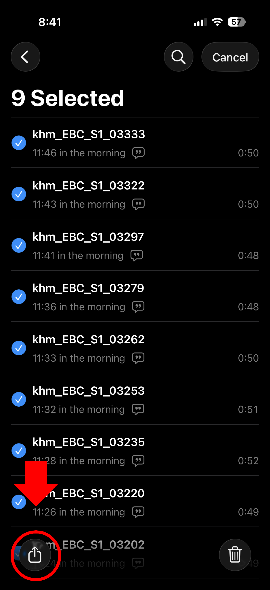
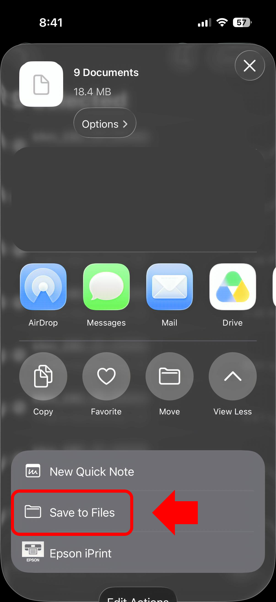
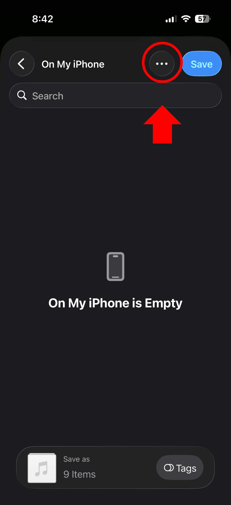
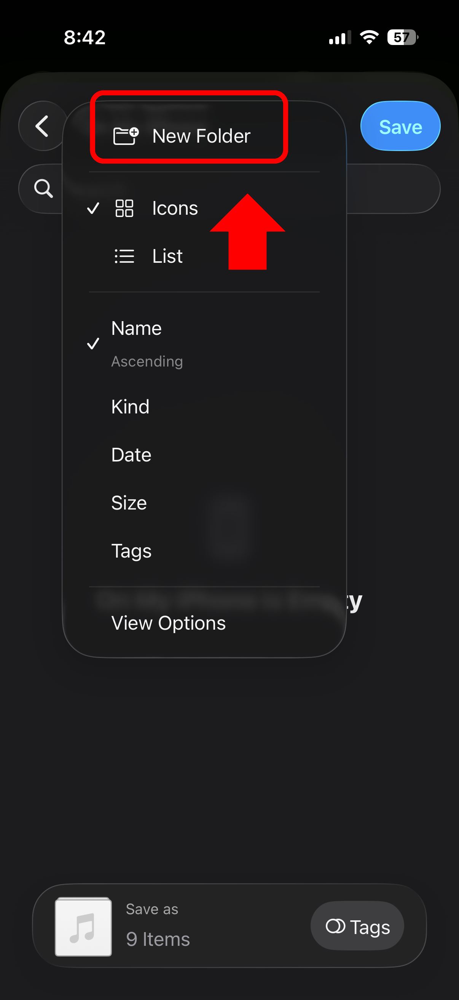
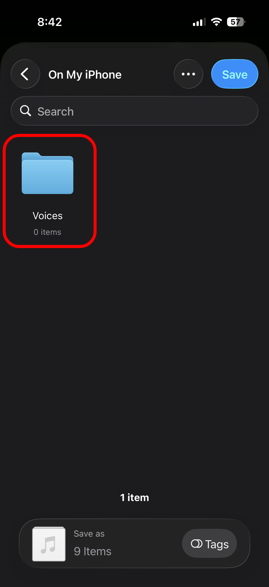
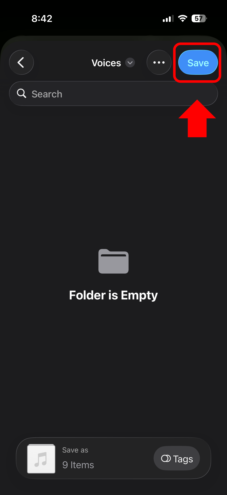

Move your Voice Memos recording to Files
In Voice Memos, select your recording, tap Share, choose Save to Files, and save it in a folder you can find again.






In Voice Memos, select your recording, tap Share, choose Save to Files, and save it in a folder you can find again.





